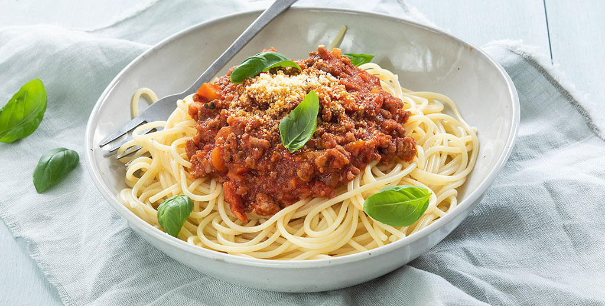

Spaghetti Bolognaise

Ingredienten
- 125 gr ontbijtspek in blokjes
- 1 ui
- 150 gr wortel
- 500 gr rundergehakt
- 1 rundvleesbouillonblokje
- 600 ml tomatenblokjes
- 1 klein blikje tomatenpuree
- 1 theelepel oregano
- 300 gr spaghetti
- peper en zout
- Extra: basilicum en Parmezaanse kaas
Bereiding
- Bak de spekjes in een droge koekenpan totdat het meeste vocht en vet verdwenen is. Snipper de ui en hak de wortels in blokjes en voeg toe aan het spek. Voeg het gehakt toe en bak dit rul.
- Los het bouillonblokje op in 100 ml kokend water. Voeg de bouillon samen met de tomatenblokjes toe aan de pan. Breng de saus op smaak met oregano en eventueel een snufje peper en zout.
- Tip: voor extra groenten voeg je wat champignons, bleekselderij of paprika toe. Of serveer de pasta met een frisse salade.